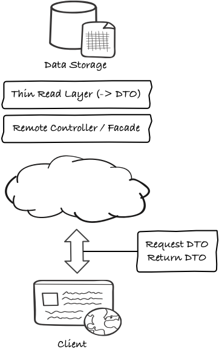
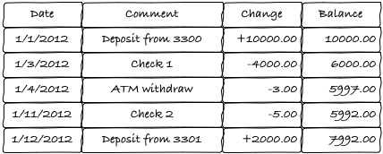
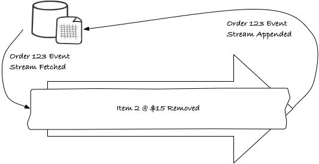
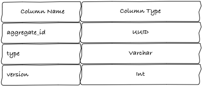
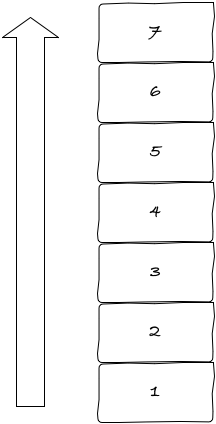
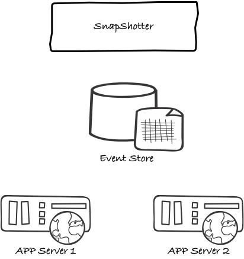
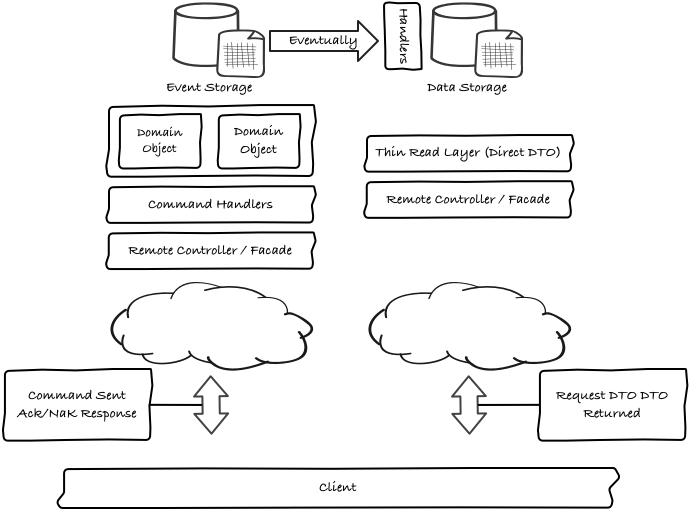

CQRS/ES
Command and Query Responsibility Segregation
&
Event Sourcing
Kudos
- Thanks Viridity ;-)
- Thanks Brian Clapper.
- Thanks whoever bought the food.
- Thanks to ByWord!
- Thanks to Viktor Klang.
- Thanks to Craig Young.
- Thanks to reveal.js.
Disclaimer
- I am not an expert @ CQRS.
- I am not an expert @ ES.
- The Legend of Klang (Immutable Domain Model).
- Focus on theory and philosophy.
- Some divisive content.
Overview
- Domain Driven Design: Tackling Complexity in the Heart of Software by Eric Evans.
- CQRS - Command and Query Responsibility Segregation.
- ES - Event Sourcing.
What is Domain Driven Design?
- For developing complex software.
- Connects implementation to an evolving model.
- Not a technology or methodology.
- A structure of practices and terminology.
- Domain Model, Ubiquitous Language, Model Driven Design.
Domain Model
- The model of core business constructs.
- Vocabulary and key concepts of the problem domain.
- Identifies the relationships among entities.
- Identifies their attributes.
Ubiquitous Language
- A language structured around the domain model.
- Used by all team members.
- Connects activities of the team with the software.
- Fully exercised throughout the modeling process.
- Facilitates communication w/ domain experts.
- Discovers key domain concepts used in the model.
Model Driven Design
- Entities
- Value Objects
- Services
- Modules
- Aggregates and Aggregate Roots
- Bounded Contexts
- Context Maps
- And more ...
What is CQRS?
Has its origins in a concept called Command Query Separation.- Object Oriented Software Construction by Bertrand Meyer.
- Methods should be either commands or queries.
- A query returns data, does not alter the state.
- A command changes the state, does not return data.
- Becomes clear what does and does not change state.
A Step Further
CQRS takes this principle a step further to define a simple pattern.CQRS is simply the creation of two objects where there was previously only one. The separation occurs based upon whether the methods are a command or a query (the same definition that is used by Meyer in Command and Query Separation: a command is any method that mutates state and a query is any method that returns a value). —Greg Young
Two Distinct Paths
- One for writes (commands).
- One for reads (queries).
- Allows separate optimization of each of these concerns.
Two Distinct Paths

Reason for Segregation
- Large imbalance between the number of reads and writes.
- Domain (command side) involves complex business logic.
- A single model encapsulating reads/writes does neither well.
-
Segregation can also occur at the data store level.
- Write side may use 3NF - optimized for writes.
- Read side uses denormalized 1NF store for fast queries.
The Q in CQRS
CRUD = PAIN
- DTOs are handled by projecting off the domain.
- DTOs are a different model than the domain.
- They usually require extensive mapping.
- Large numbers of read methods on repositories.
- Getters exposing the internal state of domain objects.
- Use of prefetch paths on the read use cases.
- Optimization of queries become extremely difficult.
- Queries use an object model then translated to a data model.
- Impedance Mismatch.
|  |
Thin Read Layer
|
The C in CQRS
On the command side its all about behavior rather than data centricity. This leads to a more true implementation of DDD.Commands are a request of the system to perform a task or action. A sample command would be register client x or change client x’s locale.
Commands
- Commands are imperative.
- They are a request to mutate state.
- They represent an action the client would like to take.
- They transfer in the form of messages rather than DTOs.
- Implies a tasked-based UI.
- Conceptually not editing data, rather performing a task.
- Can be thought of as serializable method calls.
- Process transaction vs projecting data.
- The command handler can say NO.
- No longer do you have to expose internal state.
- Your repository layer is greatly simplified.
Command Handler
In CQRS command handlers are the objects that process commands.- Client sends a command in the form of a message.
- That message will be processed by a command handler.
- In a CRUD application this = application service layer.
-
They key difference is:
- CRUD application service layer represents state mutation.
- CQRS command handlers represents behavioral tracking.
Sample Command Handler
sealed trait ClientCommand
case object RegisterClient(clientJson: String) extends ClientCommand
case object ChangeClientLocale(localJson: String) extends ClientCommand
case object RaiseClientCreditLimit(limit: Double) extends ClientCommand
class ClientCommandActor extends Actor {
def receive = {
case RegisterClient => …
case ChangeClientLocale => …
case RaiseClientCreditLimit => …
}
}Eventual Consistency
By applying CQRS the concepts of Reads and Writes have been separated. If we keep the paths segregated, how do we keep them consistent?- Eventual Consistency.
- How long between synchronizations? Business determines.
- Pushed asynchronously from the write side.
- Read side has listeners.
- Queue can be used.
- Two phased commits not needed.
- Use the Event Store as your queue.
What is Event Sourcing (ES)?
The majority of business applications today rely on storing current state in order to process transactions. As a result in order to track history or implement audit capabilities additional coding or frameworks are required.This was not always the Case
- Side-effect of the adoption of RDBMS systems.
- High performance, mission critical systems do not do this.
- RDBMS’s do not do this internally!
- SCADA (System Control and Data Acquisition) Systems.
Event Sourcing is about Capturing Events
- Its behavioral by nature.
- Tracks behavior by transactions.
- It does not maintain current state.
- Current state is derived.
CRUD Shopping Cart
CRUD application example for processing a shopping cart order:- Cart created.
- Item 1 @ $30 added.
- Item 2 @ $15 added.
- Item 3 @ $12 added.
- Item 4 @ $5 added.
- Shipping information added.
- Total @ $62 generated.
- Order 123 inserted.
CRUD Shopping Cart
Now at some time in the future before the order is shipped, the customer changes their mind and wants to delete an item.- Order 123 fetched.
- Item 2 @ $15 removed.
- Total @ $47 regenerated.
- Order 123 updated.
CRUD Shopping Cart
This is the current state persisted.
The result of these transactions the current state of the order is 3 items with a total of $47.
CRUD Shopping Cart
Now the manager ask the development team to give him a report of all orders where customers have removed items. Since only the current state of the data is recorded this cant be done.- The development team will add in a future sprint?
- Once added it will only work from now forward.
- Substantial implications to the value of the data.
Impedance Mismatch
Another problem typical CRUD applications must deal with is Impedance Mismatch as mentioned earlier.Why does this impedance mismatch exist? The object-oriented paradigm is based on proven software engineering principles. The relational paradigm, however, is based on proven mathematical principles. Because the underlying paradigms are different the two technologies do not work together seamlessly. The impedance mismatch becomes apparent when you look at the preferred approach to access: With the object paradigm you traverse objects via their relationships whereas with the relational paradigm you join the data rows of tables. This fundamental difference results in a non-ideal combination of object and relational technologies, although when have you ever used two different things together without a few hitches?” —Scott Ambler
ORMs
A tool often used to minimize some of these difficulties between an object oriented system and a relational database is an Object Relational Mapper (ORM).- Work well in most situations, come at a fairly large cost.
- Does not ultimately does not solve the problem.
- You still have impedance mismatch and non-durable data.
- Query and persist current state to database.
- Tightly couple domain and data model.
- Leaky abstraction.
- Anemic domain model.
- Lossy and the intent of the user is not captured.
- High cost of understanding ORM framework.
This will Piss People Off!
Inexperienced programmers love magic because it saves their time. Experienced programmers hate magic because it wastes their time. —@natpryce
Tracking Behavior w/ Events
In a typical CRUD application the behavior of the system is create, read, update and delete. This is not the only way the data can be viewed.Consider for a moment the notion of a transaction.
- Represent change between two points.
- Commonly referred to as Deltas.
- In static state models Deltas are implicit.
- They are left to frameworks such as an ORM.
- ORMs save state, calculate differences, update backing model.
- As a result much of the intent or behavior is lost.
The Canonical Example
In mature business models the notion of tracking behavior is very common. Consider for example an accounting system.
The Canonical Example
- Each transaction or delta is being recorded.
- Next to it is a denormalized total of the state of the account.
- To calculate, the delta is applied to the last known value.
- The last known value can be trusted.
- Its recreated by replaying all the transactions (events).
- Its can be reconciled to ensure validity.
- The data itself is a verifiable audit log.
- The Current Balance at any point can be derived.
- State can be derived for any point in time.
Events
These Deltas produced from a system built around Domain Driven Design are captured in the form of Events.- Events are notifications.
- They report on something that has already happened.
- An event would be something like client x has registered or client x locale has changed.
Shopping Cart Redux
Lets go back and take a look at Shopping Cart example and see how we manage the data from an event based perspective.- Cart created.
- Item 1 @ $30 added.
- Item 2 @ $15 added.
- Item 3 @ $12 added.
- Item 4 @ $5 added.
- Shipping information added.
- Order 123 event stream inserted.
Shopping Cart Redux

Shopping Cart Redux
Now at some time in the future before the order is shipped, the customer changes their mind and wants to delete an item.- Order 123 event stream fetched.
- Item 2 @ $15 removed event.
- Order 123 event stream appended.
Shopping Cart Redux
Shopping Cart Redux
This event based approach can be applied to any type of object. By replaying the event stream the object can be returned to the last known state.- There is a structural representation of the object.
- It exists only by replaying previous transactions.
- Data is not persisted structural.
- It is a series of transactions.
- There is no coupling between current state in the domain and storage.
No CRUD except Create & Read
- There are no updates or deletes.
- Everything is an event.
- Its stored in append only fashion.
- Delete is simply another event that gets appended.
Technology Implications
- The storage system becomes an additive only architecture.
- Append-only architectures distribute.
- Far fewer locks to deal with.
Business Implications
- Criteria is tracked from inception as an event stream.
- You can answer questions form the beginning of time.
- You can answer questions not asked yet!
- Natural audit log.
Partitioning
- Horizontal Partitioning is difficult for a relational model.
- What key do you partition on in a complex relational model?
- When using an Event Store there is only 1 key!
Saving Objects
- CRUD applications generally require complex tools.
- Use ORM’s to track changes (Deltas).
- They keep two copies of the model to compare.
- Event based systems have no need of such complex tools.
- Each delta is captured as an event and persisted.
Loading Objects
- CRUD Applications require complex object graphs.
- Lazy Loading amortizes the cost of loading an Aggregate.
Aggregates are considered as a whole represented by the Aggregate Root. Conceptually an Aggregate is loaded and saved in its entirety. —Evans, 2001
- Event stores != complex object graphs.
- Event stores do not require ORMs!
- No amortizing for loading domain via Lazy Loading.
- One simply loads the Aggregate and replays its events.
- Current state is derived.
Structure
- Event Stores generally have very simple structures.
- Generally require only two tables.
- One for the Aggregates.

Structure
- One for the Aggregate Events.

Operation
- Operations are equally as simple.
- Generally have only two actions.
- Get events for an Aggregate.
SELECT * FROM aggregate_event
WHERE aggregate_id = ‘123’
ORDER BY versionOperation
- Persist Aggregate w/ its events.
BEGIN
version = SELECT version FROM aggregates WHERE aggregate_id = ‘123’
IF version IS NULL
INSERT INTO aggregates // generates a new aggregate_id
version = 0
END
IF expectedversion != version
RAISE concurrency problem
FOREACH event
INSERT event WITH incremented version number
UPDATE aggregate with last version number
END TRANSACTIONRolling Snapshots
- What about when I have millions of events?
- Replay from the beginning?
- Isn't this inefficient?
Rolling Snapshots
This represents the current state view of an Aggregate from the beginning of time.
Rolling Snapshots
- The solution is to use rolling snapshots.
- Denormalized state of an aggregate at a given point in time.
- Heuristic to prevent loading the entire event stream.
Rolling Snapshots
Now we use snapshot to prevent the need to load all events.
Rolling Snapshots
- Rebuilding Aggregates change with Rolling Snapshots.
- We do not read from the beginning of time forward.
- We read backwards putting the events onto a stack.
- Done until there are no events or a snapshot was found.
- Snapshot applied, events are popped off the stack.
- This continues until the stack was empty.
Snapshot Table
Because of optimistic concurrency and versioning issues a separate table should be used for snapshots.
- [data] = serialized version of Aggregate for a point in time.
- The data could be stored in JSON, XML, etc.
- [version] = version of Aggregate when snapshot was taken.
The SnapShotter
In order to have snapshots, created a process that handles the task of creating the snapshots needs to be introduced.
The SnapShotter
- This process can live outside of the Application Server.
- A single process or many depending on throughput needs.
- All snapshots happen asynchronously.
Conclusion
When combined together CQRS and Event Sourcing provide a very powerful platform for complex domains.- Structured separation of read and write concerns.
- Allowing distinct read / write optimization.
- Explicitly it represents a behavioral based architecture.
- More clearly represents a Domain Driven Design approach.
- It demands a complete Event Log.
- Has a derived state model rather than a static state model.
- It implies an immutable domain model.
- Allows for a distributed concurrent domain model.
Conclusion
So what does it all look like when put together. CQRS, Eventual Consistency, ES, Rolling Snapshots?
References & Event Sourcing Frameworks
- Domain Driven Design: Tackling Complexity in the Heart of Software by Eric Evans
- Stereotypical Architecture
- Task-Base UI
- CQRS Introduction
- Events as a Storage Mechanism
- Building and Event Storage
- CQRS and Event Sourcing
- CQRS Video (1:49 Long)
- CQRS Video (6 Hours Long)
- eligosource/eventsourced
- krasserm/eventsourced